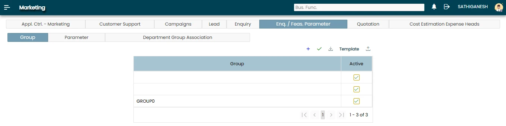

<div data-category="CRM" data-title="Group" data-updated="December 01, 2025" data-contributors="RoadmapIT" data-breadcrumb="Home,CRM,Group">
  <div class="page-content">
    <p>A group typically refers to a collection of users, leads, prospects or records that share common characteristics or access rights, in marketing Group are all configured in this screen.</p>
    <h5>Navigation path:</h5>
    <p class="fs-6">CRM \ Setup \ Setup-Marketing \ Enq./Feas. Parameter</p>
    
    <ul style="list-style-type: none; align-content: center">
      <li class="mouse-icon">
        Click on
        <i class="bi bi-plus fs-4 mx-2 text-primary"></i>
        button
      </li>
      <li class="mouse-icon">Enter the Group.</li>
      <li class="mouse-icon">Select the Active flag if the Group is to be used in transactions.</li>
      <li class="mouse-icon">
        Click
        <i class="bi bi-check-lg fs-4 mx-1 text-success"></i>
        to save
      </li>
    </ul>
  </div>
</div>
